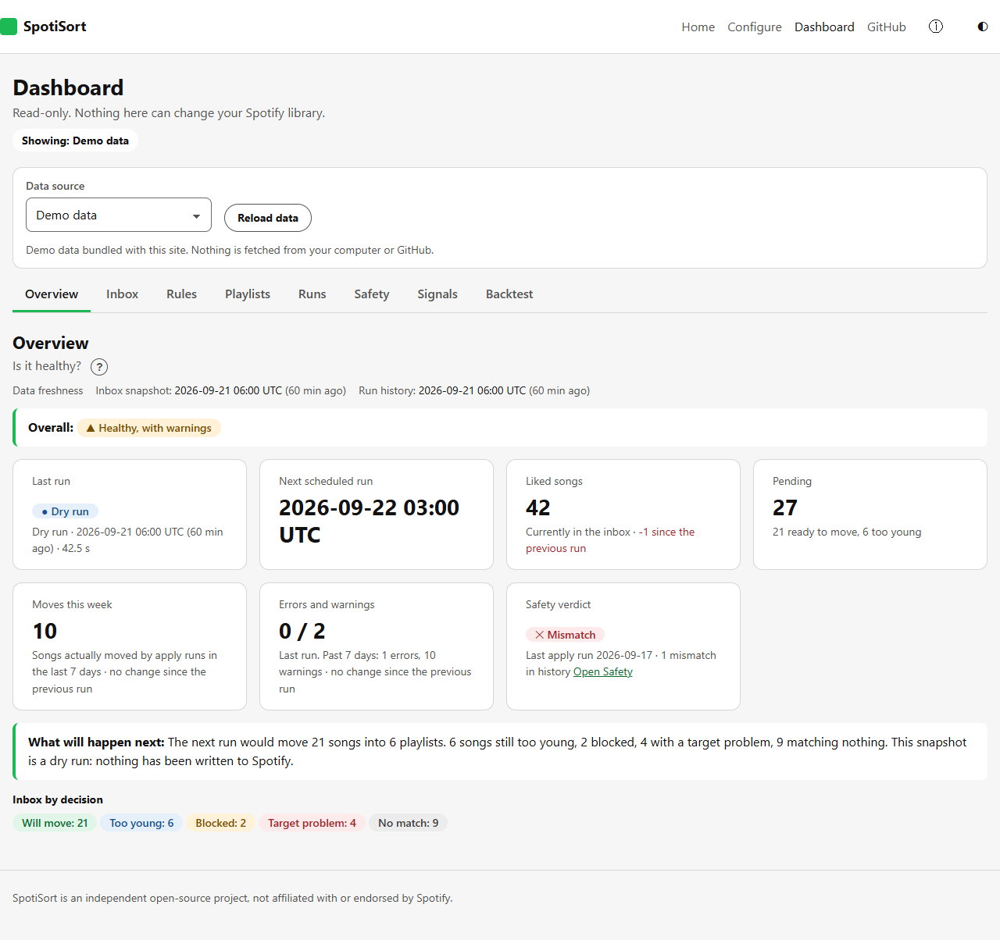

Your Liked Songs are an inbox. Let it sort itself.
SpotiSort waits a few days, then moves each liked song into a playlist you already have — using plain rules you write, running free on your own GitHub Actions.
How it works
Three steps, no server, nothing but your own fork and your own Spotify app.
Liked Songs inbox
Every song you like waits here. Nothing moves right away.
Your rules
After N days, each song is checked against rules you wrote — language, artist, year, and more.
Your playlists
A match moves the song into a playlist you already own. No match, no rule breaks — nothing bad happens.
Built to be trusted with your library
Language-first rules
Write rules around language, artist, release year or explicit content — not just genre.
Safe by default
Every run previews a dry run first. A song is only removed from Liked Songs after it's confirmed in its new playlist.
Runs free on GitHub Actions
No server, no subscription. A scheduled workflow in your own fork does the sorting.
Your data stays in your fork
There is no shared backend. Your Spotify credentials and your run history live only in your own repository.
See exactly what it will do
The dashboard reads your own run logs — nothing is hidden, and nothing is guessed.

Frequently asked questions
Do I need Spotify Premium?
Yes. As of February 2026, Spotify requires Premium to create the developer app SpotiSort needs. This can't be checked automatically — it's a prerequisite, not a paywall on our side.
Is it safe to run against my real library?
Yes, by design. Nothing is removed from Liked Songs until it has been added to its target playlist and that add has been verified. Every removal is journaled first, so it can be restored. Dry runs never write anything.
What is a dry run?
A preview. SpotiSort fetches your library, evaluates every rule, and writes down exactly what it would move — without calling any endpoint that changes your account. You review it on the dashboard before ever going live.
Why do I need to fork the repository?
SpotiSort has no shared server. Each fork runs its own scheduled job against its own Spotify developer app and its own GitHub Actions secrets — nobody but you ever holds a token that can write to your account.
What does it cost?
Nothing beyond Spotify Premium. GitHub Actions and Pages are free for public repositories at this scale.
Does it ever see my password?
No. Login goes through Spotify's own OAuth screen. SpotiSort only ever holds a refresh token, stored as a GitHub Actions secret in your own fork, never in this website.